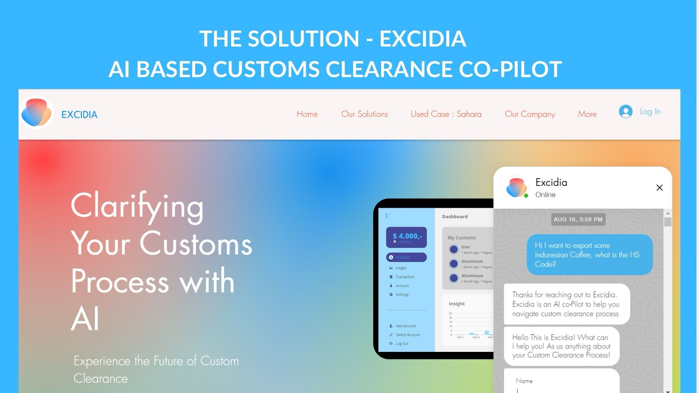

A few highlights.
TikTok Storage Observability
I built an end-to-end ETL pipeline that pulled data from APIs, processed it with
Spark and SQL, and integrated it into a seamless workflow for
data integration and dashboarding. The result was real-time visibility into TikTok’s
storage systems. What used to take Site Reliability Engineers over an hour to investigate now takes just
2 minutes — a 96% drop in incident response time. These dashboards and pipelines
are projected to save millions in infrastructure costs. I also automated compliance and legal
inquiry workflows, improving transparency and saving 40–100 manual hours per request.
Speech Quality & Fraud Signals
I built backend APIs with FastAPI and PostgreSQL to support multimodal speech and behavioral analysis.
Using NLP and ML techniques, I enabled real-time anomaly and fraud detection for online interviews.
I also developed analytics pipelines to process speech and gaze data, turning them into actionable performance insights
that made evaluations more consistent, reliable, and scalable.

AI Customs HS-Code Assistant
I built Python scripts to scrape, validate, and structure datasets of 5,000+ Harmonized System (HS) Codes for goods, ensuring accuracy and removing duplicates.
I then evaluated ML models and collaborated with engineers to design a chatbot for automated HS code classification, making it easier for businesses to navigate customs.
This project was selected as one of 50 startups in Berkeley SkyDeck’s Batch 19 Pad-13 Incubator Program, where I met with importers and exporters to gather requirements
and present AI-driven customs clearance solutions. It later evolved into Excidia, a vertical AI LLM Agent that serves as an assistance tool for everyone involved in international trade.
Autocorrect Algorithm
Built an autocorrect algorithm and a real-time typing speed counter using advanced data structures in Python and error-correction models,
improving accuracy and user experience for fast, interactive text input.
Ants vs. Bees
Designed and built a Python strategy game inspired by “Plants vs. Zombies,” implementing complex game states, player actions,
and custom characters like the QueenAnt to add depth and strategic gameplay.
Pawty AI
Collaborated with engineers to build Pawty.ai, a computer vision system that transforms dog images into animated outputs using Stable Diffusion.
The feature drove a 15% increase in user engagement and a 10% boost in user acquisition.
Visit Website
EDA • NumPy • Pandas
Road Safety Improvement
Earned 2nd place at a Datathon by analyzing highway crash data with Pandas, NumPy, and Matplotlib.
Our team identified key factors such as crash location, highway lane count, and driver behavior, and delivered 10+ actionable recommendations
to improve road safety and reduce accident risks.
View Project
Tableau Dashboard
Dog Boarding Dashboard
Built an interactive dashboard to track customer behavior and key performance indicators (KPIs).
The insights informed resource planning and marketing strategy, leading to a 10% increase in subscribers.
View Dashboard
SAS • Research • Statistics
Analyzing Family Incarceration
Conducted a statistical analysis in SAS to examine how father imprisonment and parent–child closeness affect the likelihood of child incarceration.
Applied regression models, cleaned and visualized longitudinal survey data, and uncovered significant correlations that emphasized the impact of family dynamics on future incarceration risks.
View Research
EDA • Pandas
Bike Sharing Demand
Performed an exploratory data analysis of bike-sharing usage patterns, examining weather conditions and seasonality effects on demand.
The findings informed strategies for service planning and resource allocation to better match supply with rider needs.
View Analysis
SQL
Chicago Crime Analysis
Queried Chicago crime datasets to analyze trends by crime type, location, and seasonality.
Produced data-driven insights to support more effective, targeted community safety initiatives and resource allocation.
View SQL Analysis
Regression • StatsModels
Regression Analysis
Built and evaluated linear and multiple regression models using Pandas, NumPy, and StatsModels.
Interpreted coefficients and statistical outputs to generate actionable insights, including an analysis based on the classic Card & Krueger (1994) study
of the relationship between minimum wage increases and employment, and validated their findings on modern datasets.
View Notebook